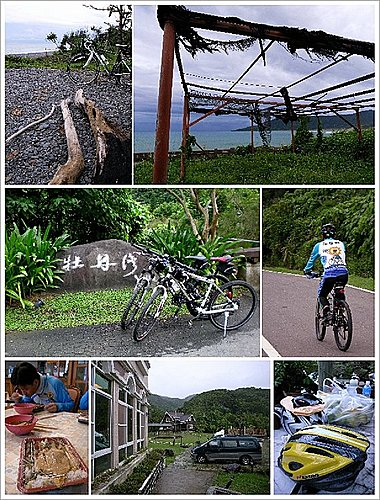

這是我第一次跟著車隊上山，從一開始報名參加就充滿期待。
車隊是老婆同事組的，裡面有幾位我不但熟識，而且還是
誘惑鼓吹我投入單車活動以及三鐵訓練的“元兇”。
他們行程規劃十分詳盡，從一個月前就開始email草稿給大家，整個活動設計最吸引我這個初入門者的部份，就是有
保母車跟隨，如此一來我不但不必煩惱怎樣攜帶腳踏車，也不必行前惡補遇到各種突發狀況的處理手續，更輕鬆的是身上的家當以及飲料、補給食物都可以放車上，毫無羈絆地徜徉青山綠水間。
↑此行總共動用到兩台廂型車，浩浩蕩蕩載掛著15輛單車，其中只有兩台是公路車，包括我那台剛入手沒多久的FUJI。
公路車不是跑公路嗎，怎麼能上山？其實原則上只要是汽機車在走的平坦道路，公路車都沒問題，這也是我ㄧ開始請教過有經驗的車友後得到的結論，問題是，在台灣的山區道路，這個原則就踢到鐵板了，而且我們還真的就遭遇到。〈以下開始平鋪直述，圖多〉
↑我們清晨微亮就集合出發，先在二高南州交流道下休息用早餐。
↑起迄點都在四重溪的大山溫泉，大夥卸車整裝準備出發，我的FUJI還掛在車頂上XD
↑總幹事先來段精神講話。
↑大合照是一定要的。
↑經過石門古戰場後，很快就到達牡丹水庫，大紅色充滿雕塑的橋身是此地的註冊商標。
↑牡丹水庫邊我們遇到搭乘遊覽車來的遊客，看到幾位歐巴桑歐吉桑聚精會神的蹲在地上“尋寶”，忍不住好奇詢問，原來他們在採集墾丁一帶的特產：
雨來菇，這種外觀像木耳的菇類長在砂石的貧脊草地上，又稱為草木耳，只要下過雨後就會冒出來，但雨水一蒸發，也會跟著消失不見，是非常珍貴的野菜，聽說快炒肉絲或蝦米甚是美味。
↑俯瞰牡丹水庫。
 | 這一天剛好遇到鋒面南下，有別於前幾天的秋老虎天氣，陰陰的頗適合踩腳踏車。
從四重溪到旭海這段199縣道，以前有跟同事及家人來過，對我而言還算熟悉，但騎著單車，感受那迎面清新涼爽的空氣、道路旁翠綠的山野風光，還有偶而經過的純樸小鎮，都有別於隔著車窗觀賞的經驗，更別提耳邊不時傳來的蟲鳴鳥叫了。 |
 | 一開始我有點擔心自己是菜鳥，會被海放，結果發現公路車佔著車身輕盈之便，竟然可以跟著前導的幾輛，對FUJI的表現可以說相當滿意。 |
↑雖說跟著一路往前衝沒太大問題，但是身邊經過的美景不好好欣賞卻也可惜，於是我在邊騎邊拍的情況下，逐漸脫隊‧‧‧
↑就是這些偶而出現在眼前的風光讓人忍不住停下來讚嘆一番。
↑牡丹國小。
↑國小門口的壁畫很可愛，這是飛天魔毯？
 | 牡丹社區的教堂。 |
 | 第一個遇到的大叉路，東源的方向會接到往台東的南迴。 |
 | 到這裡先停一下等後面的隊友。 |
↑此行最陽春的腳踏車，還是位女長輩騎的，雖然只有21速，但全程跟著沒問題，讓大夥非常佩服。
我們暫停的這個庭院整理的滿漂亮的，還有公共廁所，問一旁的村民，果然以前是民宿，目前可能經歷風災還在整理當中。
↑山區大概之前有下雨，路面都濕濕的，一路騎下來，簇新的FUJI已經滿身泥濘了，加上沒有擋泥板，整個車衣背後被噴的髒兮兮的。
↑旭海這裡已經接近東海岸，最高點可以眺望到海平面。
↑過了高點後一路滑下坡十分暢快，路過牡丹灣VILLA，進來拍一下。
↑旭海村落，頗具特色的潘朵拉咖啡館，牌子上寫著：
單車環島‧旭海站。
↑往旭海草原的路標。
↑繼續往前來到旭海社區，跟前導車隊會合休息。
↑群山環繞的美麗草坪。
 | 涼亭下補充水分，保母車也在這裏等候我們。 |
 | 能量補充完畢，可以繼續上路囉，接下來不遠的海岸線，是此行最美的菁華路段。〈待續〉 |